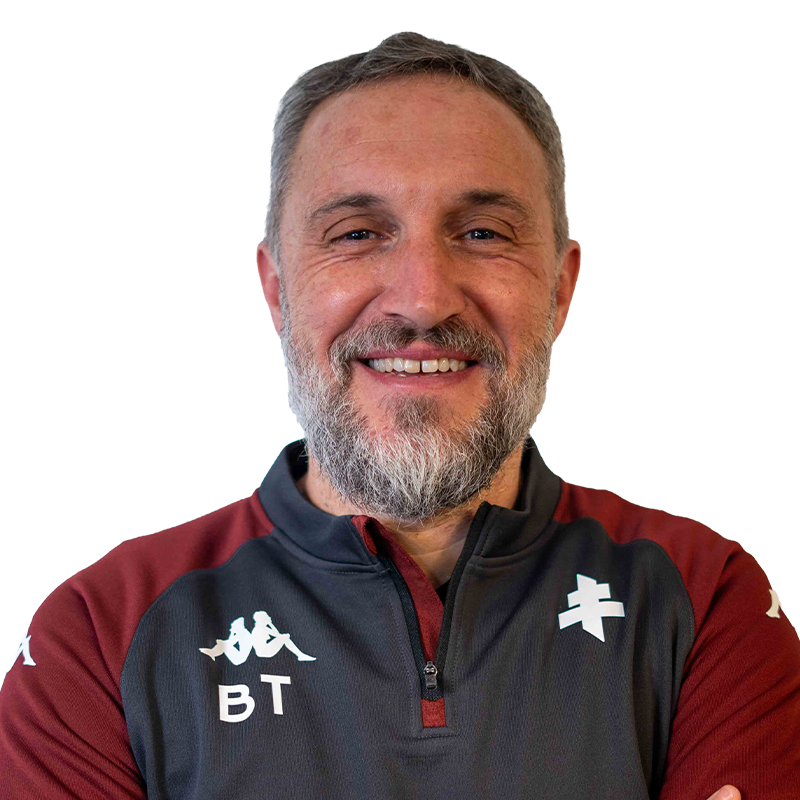
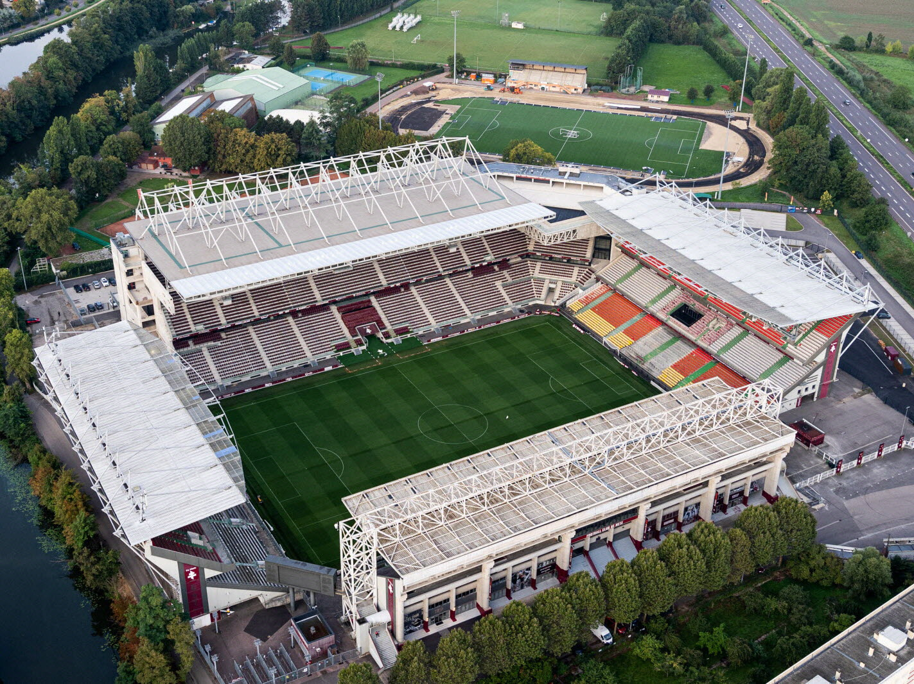

Treinador: Benoit Tavenot
Benoit Tavenot é um mestre da organização tática,destaca-se no panorama francês como um treinador capaz de catalisar o talento individual em prol do coletivo, elevando a competitividade de equipas em contextos de profunda reestruturação.

Estádio: Stade Saint-Symphorien
O Stade Saint-Symphorien é um estádio de futebol com uma história centenária, localizado numa ilha no rio Mosela, em Metz, França, e é a casa do FC Metz desde a fundação do clube.

Estilo de Jogo:
No FC Metz, o estilo de jogo de Benoît Tavenot reflete a sua escola de formação e a influência de anos como adjunto de Frédéric Antonetti. O seu Metz é caracterizado por ser uma equipa pragmática, organizada e vertical.
"Le Feu Sacré!"